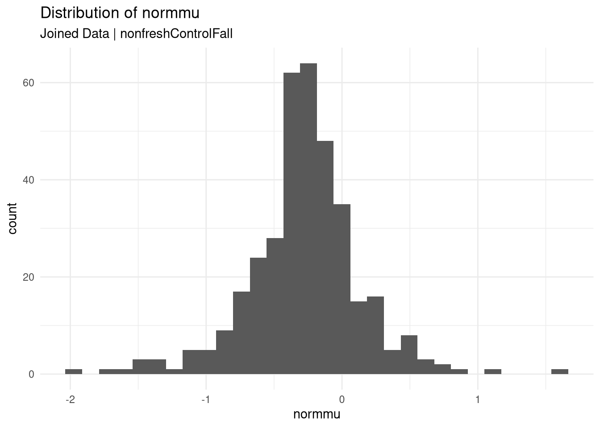
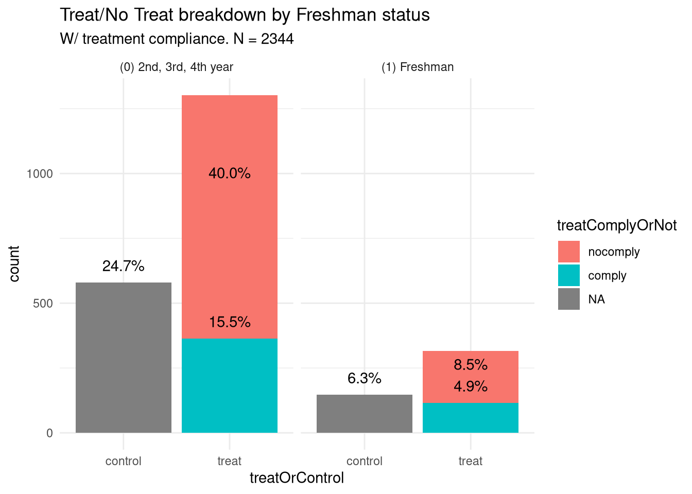
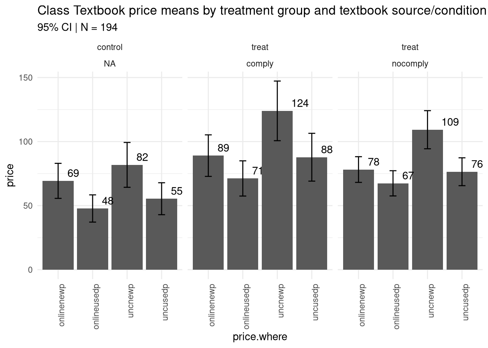
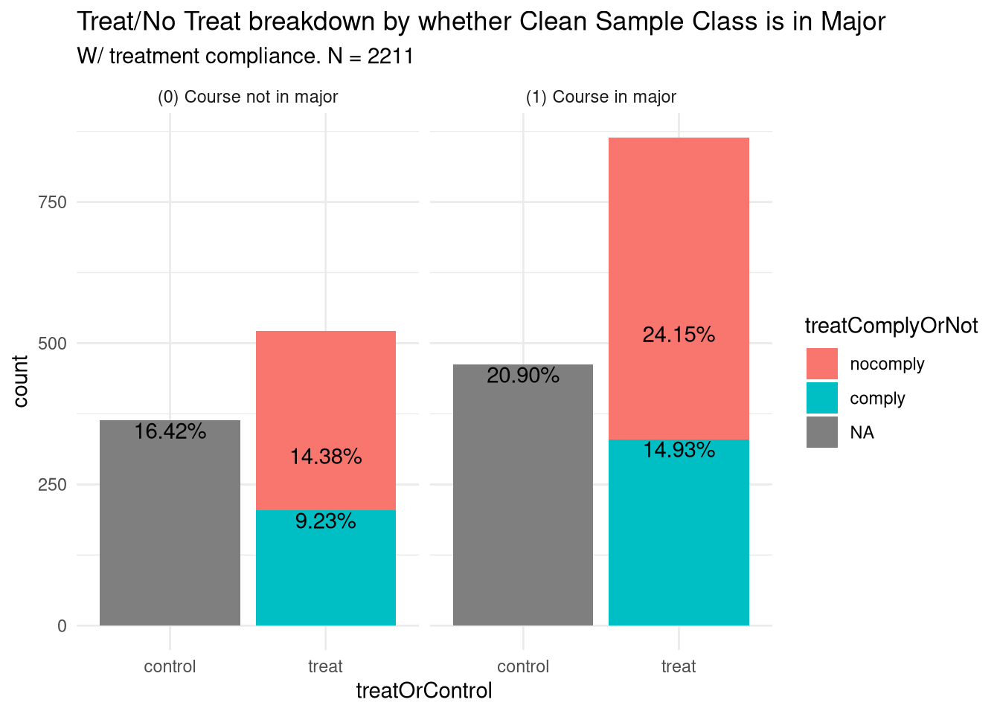
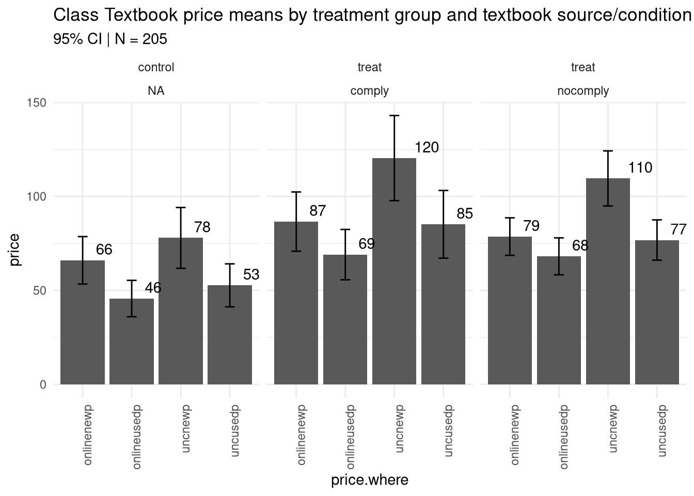

Summary Statistics
Last updated: 2020-02-27
Checks: 7 0
Knit directory: cleanit/
This reproducible R Markdown analysis was created with workflowr (version 1.6.0). The Checks tab describes the reproducibility checks that were applied when the results were created. The Past versions tab lists the development history.
Great! Since the R Markdown file has been committed to the Git repository, you know the exact version of the code that produced these results.
Great job! The global environment was empty. Objects defined in the global environment can affect the analysis in your R Markdown file in unknown ways. For reproduciblity it’s best to always run the code in an empty environment.
The command set.seed(20200227) was run prior to running the code in the R Markdown file. Setting a seed ensures that any results that rely on randomness, e.g. subsampling or permutations, are reproducible.
Great job! Recording the operating system, R version, and package versions is critical for reproducibility.
Nice! There were no cached chunks for this analysis, so you can be confident that you successfully produced the results during this run.
Great job! Using relative paths to the files within your workflowr project makes it easier to run your code on other machines.
Great! You are using Git for version control. Tracking code development and connecting the code version to the results is critical for reproducibility. The version displayed above was the version of the Git repository at the time these results were generated.
Note that you need to be careful to ensure that all relevant files for the analysis have been committed to Git prior to generating the results (you can use wflow_publish or wflow_git_commit). workflowr only checks the R Markdown file, but you know if there are other scripts or data files that it depends on. Below is the status of the Git repository when the results were generated:
Ignored files:
Ignored: packrat/lib-R/
Ignored: packrat/lib-ext/
Ignored: packrat/lib/
Untracked files:
Untracked: .drake/
Untracked: data/cleansample.csv
Untracked: data/pricebeliefs.csv
Untracked: packrat/src/
Unstaged changes:
Modified: R/functions.R
Note that any generated files, e.g. HTML, png, CSS, etc., are not included in this status report because it is ok for generated content to have uncommitted changes.
These are the previous versions of the R Markdown and HTML files. If you’ve configured a remote Git repository (see ?wflow_git_remote), click on the hyperlinks in the table below to view them.
| File | Version | Author | Date | Message |
|---|---|---|---|---|
| Rmd | 46d3c35 | Julian McClellan | 2020-02-27 | indicate price plots use # classes |
| html | c8b4db7 | Julian McClellan | 2020-02-27 | Cleanup .md titles. |
| Rmd | f28f3b4 | Julian McClellan | 2020-02-27 | wflow_publish(knitr_in(“analysis/summaryStats.Rmd”), verbose = T) |
| html | 8ddc410 | Julian McClellan | 2020-02-27 | Build site. |
| html | a7c5a5f | Julian McClellan | 2020-02-27 | Build site. |
| html | a44e6f2 | Julian McClellan | 2020-02-27 | Initial site upload of summaryStatistics. |
| Rmd | 3943dda | Julian McClellan | 2020-02-27 | wflow_publish(knitr_in(“analysis/summaryStats.Rmd”), view = T, verbose |
Data Cleaning procedures
Clean Sample
- Initial Size: 2449
- Remove blank email addresses 105
periodcolumn created with valuesfall12andspring13corresponding toTRUEvalues offall12dumandspring13dumrespectively.- Final size: 2344
Price Beliefs
- Initial Size: 4785
- Did not remove unfinished surveys (537 did not finish.)
periodcolumn created with valuesfall12andspring13.startyearandstartmonthcreated from original columnstartdateperiod=fall12set ifstartyear == 2012and (startmonth == 11orstartmonth == 12)period=spring13set ifstartyear == 2013andstartmonth == 4
- Final size: 4785
Plots for Clean Sample Data
Treatment Breakdown: Clean Sample Class in Student Major

| Version | Author | Date |
|---|---|---|
| a44e6f2 | Julian McClellan | 2020-02-27 |
Treatment Breakdown: Clean Sample Students’ Freshman Status

| Version | Author | Date |
|---|---|---|
| a44e6f2 | Julian McClellan | 2020-02-27 |
Plots for Loose Joined Data
Overview of Join
The “loose” joined data joins the clean sample and price beliefs tables on email and period. Period joins are allowed only if the period of the clean sample is the same as the price beliefs period.

Treatment Breakdown: Clean Sample Class in Student Major
| Version | Author | Date |
|---|---|---|
| a44e6f2 | Julian McClellan | 2020-02-27 |
Treatment Breakdown: Clean Sample Students’ Freshman Status

| Version | Author | Date |
|---|---|---|
| a44e6f2 | Julian McClellan | 2020-02-27 |
Plots for Looser Joined Data
Overview of Join
The “looser” joined data joins the clean sample and price beliefs tables on email and period. Period joins are allowed as long as the period of the clean sample occurs during the same period or earlier than the price beliefs. period.cs <= period.pb
Treatment Breakdown: Clean Sample Class in Student Major

| Version | Author | Date |
|---|---|---|
| a44e6f2 | Julian McClellan | 2020-02-27 |
Treatment Breakdown: Clean Sample Students’ Freshman Status

| Version | Author | Date |
|---|---|---|
| a44e6f2 | Julian McClellan | 2020-02-27 |
R version 3.6.2 (2019-12-12)
Platform: x86_64-pc-linux-gnu (64-bit)
Running under: Manjaro Linux
Matrix products: default
BLAS: /usr/lib/libopenblasp-r0.3.7.so
LAPACK: /usr/lib/liblapack.so.3.9.0
locale:
[1] LC_CTYPE=en_US.UTF-8 LC_NUMERIC=C
[3] LC_TIME=en_US.UTF-8 LC_COLLATE=en_US.UTF-8
[5] LC_MONETARY=en_US.UTF-8 LC_MESSAGES=en_US.UTF-8
[7] LC_PAPER=en_US.UTF-8 LC_NAME=C
[9] LC_ADDRESS=C LC_TELEPHONE=C
[11] LC_MEASUREMENT=en_US.UTF-8 LC_IDENTIFICATION=C
attached base packages:
[1] stats graphics grDevices utils datasets methods base
other attached packages:
[1] doBy_4.6.5 magrittr_1.5 ggplot2_3.2.1 workflowr_1.6.0
[5] drake_7.10.0 lubridate_1.7.4 data.table_1.12.8
loaded via a namespace (and not attached):
[1] storr_1.2.1 tidyselect_1.0.0 xfun_0.12 purrr_0.3.3
[5] lattice_0.20-38 generics_0.0.2 colorspace_1.4-1 vctrs_0.2.3
[9] htmltools_0.4.0 yaml_2.2.1 rlang_0.4.4 later_1.0.0
[13] pillar_1.4.3 txtq_0.2.0 glue_1.3.1 withr_2.1.2
[17] plyr_1.8.5 lifecycle_0.1.0 stringr_1.4.0 munsell_0.5.0
[21] gtable_0.3.0 evaluate_0.14 labeling_0.3 knitr_1.28
[25] httpuv_1.5.2 parallel_3.6.2 broom_0.5.4 Rcpp_1.0.3
[29] promises_1.1.0 scales_1.1.0 backports_1.1.5 filelock_1.0.2
[33] farver_2.0.3 fs_1.3.1 Deriv_4.0 packrat_0.5.0
[37] digest_0.6.23 stringi_1.4.6 dplyr_0.8.4 grid_3.6.2
[41] rprojroot_1.3-2 tools_3.6.2 base64url_1.4 lazyeval_0.2.2
[45] tibble_2.1.3 tidyr_1.0.2 crayon_1.3.4 whisker_0.4
[49] pkgconfig_2.0.3 MASS_7.3-51.4 Matrix_1.2-18 assertthat_0.2.1
[53] rmarkdown_2.1 R6_2.4.1 nlme_3.1-142 igraph_1.2.4.2
[57] git2r_0.26.1 compiler_3.6.2